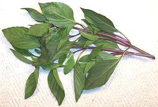
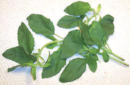

SAFARI
Users
General & History
Basils are a major sub-tribe of the mints, probably originating in Africa but first cultivated in India. Varieties of these aromatic plants are now grown worldwide, particularly in Southeast Asia, Mediterranean countries and California.
Classifying basils is difficult even for botanists because they are highly promiscuous and cross breed with abandon, even from one species to another. Many species have a half dozen or more "scientific" names and cultivars of the same species may vary in shape and color.
Varieties
Italian Basil
[Sweet Basil, Genovese Basil, Mediterranean Basil; Ocimum basilicum]
This Basil is universally called for in European and American recipes.
It is more aromatic and less sharp than Thai
Purple Basil, but the two are reasonably interchangeable. I have
been known to make Italian pesto using Thai basil because I can get it
at a fraction of the price for Italian.
Details and Cooking.
Purple Basil
[Opal Basil; Ocimum basilicum]
Purple basil ranges from purple splotches on green leaves to deep dark purple with almost no green. It is fairly closely related to Italian basil but not as usable for many recipes because of its color. It is, however, very good in salads and for applications where color is not critical. It should not be confused with Thai Purple Basil (see below) which is mostly green with purple stems and has a somewhat different flavor. Opal (deep purple) basil is the preferred basil for Georgian cuisine.
Growing: Purple basil is more resistant to fusarium wilt
than Italian basil but may be somewhat stunted by it.
Thai Basils
These basils have become quite important in some parts of North America, particularly Southern California, where there are large Thai and Vietnamese communities, as well as a general enthusiasm for Thai cuisine.
Thai Purple Basil [Bai Horapha (Thai); Rau Que, Hung Que (Viet); Pak Boualapha, Pak Boula Phe (Laos); Anise Basil; Ocimum basilicum var thyrsiflora]
Now quite common in Southern California, this basil has good flavor
and reasonable keeping properties (almost a week if very fresh and
treated carefully).
In general the leaves are dark green with only a hint of purple, and the
stems are distinctly purple but there are also all-green varieties.
Of the Asian basils, this one is closest to
Italian Basil but is sharper,
slightly sweeter, and with a more anise-like flavor. They can
substitute for each other in a pinch. I've even used Thai Purple
Basil to make Italian Pesto because I can get piles of it cheap
at ethnic markets, while Italian Basil can cost several dollars
an ounce in the supermarkets.
Details and Cooking.
Thai Lemon Basil / Lao Basil [Bai Maeng-lak (Thai); Pak i tou (Laos); Sangig (Philippines);
Kemangi (Indonesia); Ocimum x africanum alt Ocimum x
citriodorum]
[Bai Maeng-lak (Thai); Pak i tou (Laos); Sangig (Philippines);
Kemangi (Indonesia); Ocimum x africanum alt Ocimum x
citriodorum]
This is one of the basils that has become common in Southern California,
often labeled "Thai Basil". It is characterized by a citrus fragrance,
smaller light green pointed leaves and a relatively light flavor -
and bad keeping properties (maybe 3 days if you take good care of it).
It often alternates with Thai Purple Basil
in the markets. The stronger more aromatic flavor of the purple is better
for most Thai cooking while the Lemon Basil is used mainly for salads and
some soups. Details and Cooking.
Holy Basil [Tulsi (india); Krapao (Thai); Pak Kapow, Bai Supow, Pak i tou Tai (Laos); Humong Basil (Calif.); Hot Basil Ocimum sanctum (Mint family)] In India this basil is highly revered and used for religious purposes and in Ayurvedic medicine. In Thailand and Vietnam it is used as a culinary herb. Unlike other basils it is always cooked, not used raw or just warmed. There are two basic varieties, one with purplish green leaves and purple stems (called purple), the other is all green (called white). Unlike other basils the leaf margins are strongly serrated, the leaves are slightly fuzzy and the stems are definitely fuzzy. It has very poor keeping qualities, if it's really fresh when you buy it you may get 2 days. Holy Basil has a strong flavor that is sharper and more minty than other basils, and with a hint of camphor. Details and Cooking. Basil Seeds[Takmaria, Tukmaria sabja, Subja, Falooda (India); Ocimum basilicum]
Basil seeds have a coating on them that becomes gelatinous
when soaked overnight in water. This feature is exploited in a number
of drinks throughout South and Southeast Asia, particularly India and
Thailand. The seeds provide texture and do not have much of a basil
flavor. Basil seeds are also used in traditional and Ayurvedic medicine.
As the photo specimens show, these seeds are very small, less than
1 mm long.
|
African Basil
[Wild Basil, Ocimum canum, also Ocimum kilimandscharicum]
A perennial basil grown in Africa and recently brought to Europe
but not yet popular in North America. It's flavor is strong but less
pleasant than that of Thai Purple Basil. In Europe it is being used to
produce interesting hybrids with Mediterranean basil. From the ads on
the Internet I gather O. canum has widespread medicinal and
magical uses.
Photo by Dinesh Valke distributed under license Creative Commons
Attribution-ShareAlike 2.0 Generic.
African Blue Basil
[Ocimum kilimandscharicum x Ocimum basilicum]
This is a pernneial hybrid between an African and a European basil and
is now widely sold by herb vendors here in Southern California.
It flowers profusely, but is sterile so no seeds are produced. For
greater production of leaves, flower heads should be cut off regularly.
This basil has found use more as a decorative than as a culinary herb
because it's not a good replacement for Italian basil, Thai basil or
Holy basil due to its high camphor content. This makes the flavor
significantly different. It may be good as an herb used with beef,
lamb or goat dishes - I haven't tried that yet.
Besobela
[Beso Bela; Ethiopian Sacred Basil; Ocimum sanctum?]
This plant is native to Ethiopia and has important uses in Ethiopian and
Eritrean cuisines. It is said to be a variety of Tulsi (South and Southeast
Asian "Sacred Basil").
Details and Cooking.
Tree Basil
-[African Basil, Clove basil Wild Basil (Hawaii); Horapha-chang (Thai); East Indian Basil (Filipino); Ocimum gratissimum]
This tropical basil grows wild in parts of Africa and Southeast Asia and
Hawaii. The leaves have a very intense flavor of cloves, so intense just
a couple of leaves in the pot is sufficient. It is said to be particularly
good for use with meats cooked in red wine. This basil is a perennial
and far larger than other basils, growing as high as 10 feet.
Photo by Forest & Kim
Starr distributed under license
Creative Commons
Attribution 3.0 - attribution required, notification desired at
starrimages@hear.org.
Health & Nutrition
Recent research has shown that the essential oils contained in basil have strong antioxidant, anti-cancer, antiviral and anti-microbial properties. Some experiments have shown a potential for decreasing blood platelet aggregation.
Tulsi (Holy Basil) is very much used in India as a medicinal to treat everything from common colds to heart disease. Recent research has shown it to be useful in treatement of type 2 diabetes and to reduce blood cholesterol levels. High in antioxidants, it is thought to have potential for treatment of radiation sickness and to reduce formation of cataracts.
Basil contains the known carcinogen estragole, but researchers estimate it would take between 100 and 1000 times the normal culinary usage to produce a statistically measurable increase in cancer risk.